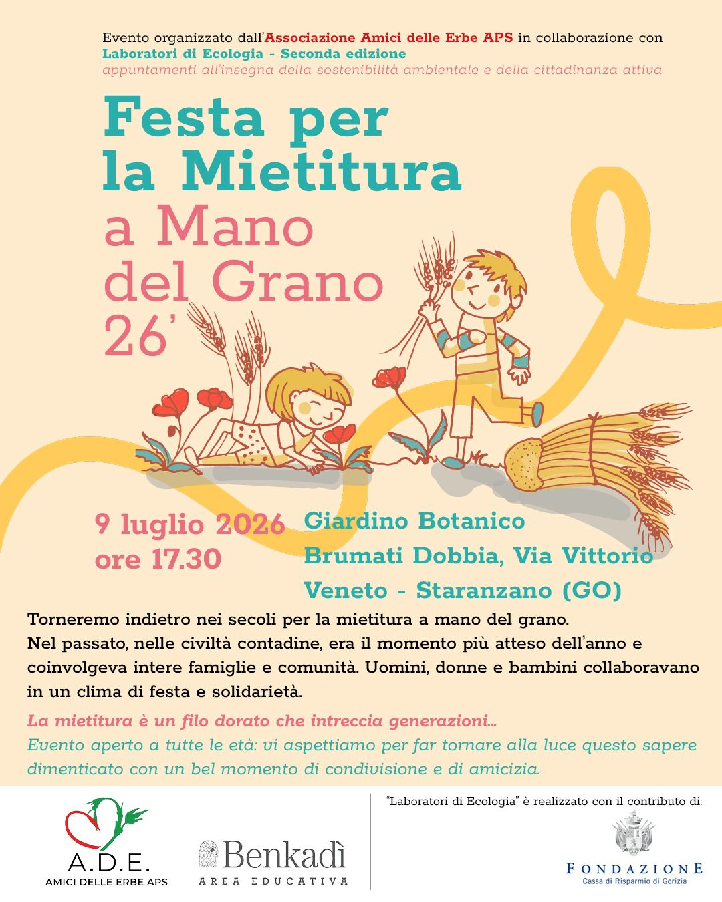

I Nostri Appuntamenti

Festa per la mietitura a mano del grano
Data: giovedì 9 Luglio 2026, ore 17:30
Torneremo indietro nei secoli per la mietitura a mano del grano!
GreenTalks
Data: da venerdì 10 a domenica 12 Luglio 2026
Un ciclo di dialoghi e incontri gratuiti su sostenibilità, tutela ambientale e transizione ecologica. Vi aspettiamo in Area dei Brechi a San Canzian d'Isonzo!